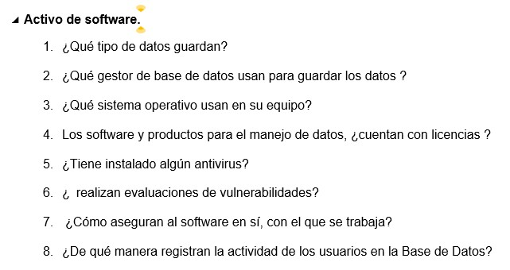
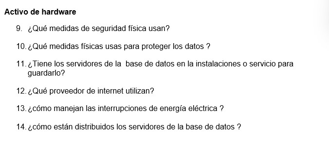
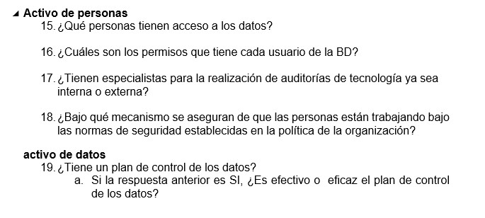
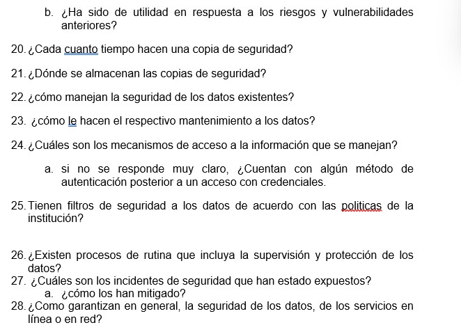

NoSQL es un enfoque para el diseño de bases de datos que puede adaptarse a una amplia variedad de modelos de datos, incluidos los formatos de clave-valor, documentos, columnas y gráficos. NoSQL, que significa "no solo SQL ", es una alternativa a las bases de datos relacionales tradicionales en las que los datos se colocan en tablas y el esquema de datos se diseña cuidadosamente antes de crear la base de datos.
Breve historia de las Bases de Datos NoSQL.Los conceptos detrás de NoSQL se desarrolló lentamente durante varios años. Los grupos independientes luego tomaron esos ideas y las aplicó a sus propios problemas de datos, creando así las diversas bases de datos NoSQL que existen en la actualidad
Caracteristicas de las bases de datos NoSQL.
Bases de datos Clave-Valor Implementan un modelo de datos simple que empareja una clave única con un valor asociado. Debido a que este modelo es simple, puede conducir al desarrollo de bases de datos de valor clave, que son extremadamente eficaces y altamente escalables para la administración de sesiones y el almacenamiento en caché en aplicaciones web.
Bases de datos de documentos Almacenan datos semiestructurados y descripciones de esos datos en formato de documento. Permiten a los desarrolladores crear y actualizar programas sin necesidad de hacer referencia al esquema maestro.
Bases de datos columnares. organizan las tablas de datos como columnas en lugar de filas. Los almacenes columnares se pueden encontrar tanto en bases de datos SQL como NoSQL. Los almacenes de columnas anchas pueden consultar grandes volúmenes de datos más rápido que las bases de datos relacionales convencionales.
Bases de datos orientadas a grafos. organizan los datos como nodos, que son como registros en una base de datos relacional, y bordes, que representan conexiones entre nodos. Dado que el sistema de gráficos almacena la relación entre los nodos, puede admitir representaciones más ricas de las relaciones de datos.
Introduccion y prinipios de Mongo DB. MongoDB es una base de datos NoSQL orientada a documentos que se utiliza para el almacenamiento de datos de gran volumen. En lugar de usar tablas y filas como en las bases de datos relacionales tradicionales, MongoDB hace uso de colecciones y documentos.
Funciones de MongoBD:
Conceptos básicos: Que es una coleccion, un cursor, una base de datos, un documento, un campo, que es un JSON
Caracteristicas de MongoDB:
REDIS: El nombre Redis proviene de las iniciales de Remote Dictionary Server (servidor de diccionario remoto), un tipo de servidor apto como memoria rápida para datos. Como sistema de gestión de base de datos (SGBD), Redis ofrece tanto una base de datos en memoria (in-memory database) como de clave-valor (key-value store)
Ventajas de uso:
Instalacion de REDIS en Windows.
Que es? es un sistema de administración de bases de datos distribuidas diseñado para manejar un gran volumen de datos estructurados en servidores de productos básicos. Está diseñada para manejar big data. La característica principal de Cassandra es almacenar datos en múltiples nodos sin un solo punto de falla.
Principales caracteristicas de Apache Cassandra:
Base de datos de datos orientada a grafoses una base de datos diseñada para tratar las relaciones entre los datos como igualmente importantes para los datos en sí. Está destinado a contener datos sin restringirlos a un modelo predefinido. En cambio, los datos se almacenan como los sacamos primero, mostrando cómo cada entidad individual se conecta o se relaciona con otras.
Que es Neo4j ????? es una base de datos de gráficos nativa NoSQL de código abierto que proporciona un backend transaccional compatible con ACID para sus aplicaciones. Implementa de manera eficiente el modelo de gráficos de propiedades hasta el nivel de almacenamiento. Esto significa que los datos se almacenan exactamente como los escribe en la pizarra, y la base de datos usa punteros para navegar y recorrer el gráfico.
Caracteristicas:
Hablar de seguridad de los datos se refiere a las diversas medidas que toman las organizaciones para garantizar que sus bases de datos estén protegidas de amenazas internas y externas.Esta seguridad de los datos incluye proteger la propia base de datos, los datos que contiene, su sistema de administración de bases de datos y las diversas aplicaciones que acceden a ella.
Consecuencias de las vulnerabilidades a los datos:
Importancia de la seguridad de los datos:
Principales amenazas y desafios comunes para los datos:
Principales amenazas para los datos:
La norma ISO es establecida por la Organización Internacional de estándares (ISO), y se compone de estándares y guías relacionados con sistemas y herramientas específicas de gestión aplicables en cualquier tipo de organización
ISO 27001 es el conjunto de requisitos para implementar un SGSI. Es la única norma certificable de las que se incluyen en la lista y consta de una parte principal basada en el ciclo de mejora continua y un Anexo A, en el que se detallan las líneas generales de los controles propuestos por el estándar.
ISO 27002 se trata de una recopilación de buenas prácticas para la Seguridad de la Información que describe los controles y objetivos de control. Actualmente cuentan con 14 dominios, 35 objetivos de control y 114 controles.
Avance en la recoleccion de la información para la creacion del plan de Seguridad
Preguntas usadas para la recoleccion de la informacion
   Presentacion grupal para la defensa del Plan de seguridad elaborado en las 4 semanas anteriores